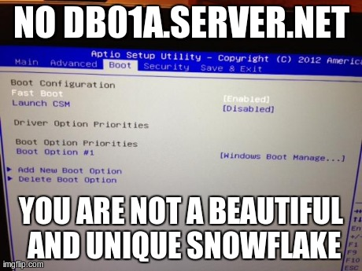

I’ve written lots of crappy Puppet modules. Here is a slightly less crappy module that can help you configure BIOS settings on your servers for you.
It works on Dell C class servers and Intel platforms. Please pull request or email me if you want to have it work on something else too!
Why?
BIOS settings should be considered configuration just like any other configuration, and hence managed by your configuration management tool, if possible.
# Easy to set turbo on a dell
bios::setting {'turbo_mode': value => 'disabled' }
# Intel requires some more hand holding with turbo. You set 1/0 and expect Enabled/Disabled..
bios::setting {'Intel(R) Turbo Boost Technology': value => '0', expect => 'Disabled', section => 'Processor Configuration' }
# Set fan speed on intel:
bios::setting {'Fan PWM Offset': value => '100', section => 'System Acoustic and Performance Configuration' }
# Disabled Cstates on dell:
bios::setting {'c_states': value => 'disabled' }
Running Puppet on OpenWrt is still far from perfect. There are going to be lots of bugs to be worked out. There are many use-cases / puppet modules / openwrt targets that I am not testing. If you think there is something wrong that could use fixing, feel free to open a Github Issue. I don’t want to bother upstream OpenWrt or Puppet with questions until things are better tested.
To reiterate: Don’t comment on the blog if something doesn’t work. Open a Github Issue. And yes, things are going to be broken. Lets work together to fix them one at a time.
Picking a server hostname is a big deal. I’ve seen quite a few, lets traverse the hostname-awesomeness-continuum and see if we can learn something.
Worsest
morpheous
trinity
alf
Why do these suck? These names have no information what-so-ever. If you see a server alert, you have no clue what services are actually down. It might as well be a random string. IT is a random string.
Pro Tip: Don’t give make server hostnames random strings.
You wouldn’t do this would you?
hostname shuf -n 1 /usr/share/dict/words
Additionally, the name almost enables admins to overload the server with multiple services. “What server should we run DNS on? Put it on Alf, it has some spare cycles.” That conversation would not happen if the server was called “db04”. Also we have no way to judge the urgency of a server outage without being very familiar with the services it provides.
Oh, and it doesn’t scale. Say it with me here: **Servers are not Precious Snowflakes! **And no, giving your server’s custy names does NOT increase your security. Prove me wrong.
Worser
msr2
eln4
wtf5
These names sometimes come from ancient department abbreviations or maybe three unrelated words. They also might hint at being part of a collection, but many times they are indicators of server cruft. For example, wtf5 could be the fifth server in a long line of failures. wtf1-4 don’t exist anymore, sorry for the confusion.
Don’t do this! I appreciate the brevity, but save it for DNS CNAMES. I can understand naming something “server2” during an upgrade from “server”, but unless you have good reason, rename it back when you are done. Future employees will thank you and it makes your infrastructure _feel _cleaner.
And no, incrementing the number on the end of your hostname on every new server rebuild does not make you more secure. Prove me wrong again.
Worse
srv001-100
dell01-08
node01-99
We are getting slightly better here I think. This is another anti-pattern I have seen in the wild: pick a generic name and span it across the range. Fill up the servers as needed.
Whyyy!!? Again, there is no inherent information or context from the hostname. I have no idea what runs on dell07. Sure I know it is a Dell. Or is it?
Pro Tip: Bake tribal knowledge into your infrastructure by setting descriptive hostnames.
Better
clientname
different-client
legacy-name (that has no relevant meaning today)
The world isn’t perfect. Sometimes it does make sense to group services by a client’s name, or maybe because you have some legacy that you want self-contained on a single server. Could be as good as it gets.
Betterer
dns1-5
backend01-04
fe01-99
These are nice. I have a good idea about what these servers do, how important it is if one goes down, what services are impacted, etc. These are pretty much bestest, honestly.
I’m conflicted on leading zeros. Future proofing is one thing, but how many dns servers do you honestly anticipate building? Better than this though: [ mail, mail1, mail2, mail3 ]. Ug. Renaming is not nearly as hard as people think. Hostnames are **NOT **permanent.
Bestest
db01a
nfs01-04
mail
Yes. To me these are perfect. The very name of the server implies what runs on it, and deters admins from running other things on it. We are talking one logical service per server.
I like db01a because it implies that there is a pair, db01b. (Bonus points for a db01 floating ip, if applicable)
mail: It is the mail server. Don’t let your co-workers tell you that you are un-creative. They don’t even know. Not every situation calls out for an HA solution, sometimes it is ok to have a mail server.
Conclusion
I have no idea what your situation is, don’t listen to me. Picking server hostnames is a bikeshed problem. Pick one and move on with your life.
The Balanced guys look like they are Python people. That’s cool. BeautifulSoup is the only Python html parser I’ve used:
import urllib2
import BeautifulSoup
import re, base64
content = urllib2.urlopen('http://blog.balancedpayments.com/balanced-payments-operations-automated-testing-continuous-deployment-jenkins/').read()
soup = BeautifulSoup.BeautifulSoup(content)
# Last pre has the base64 string
string = soup.findAll('pre')[-1].getText()
print base64.b64decode(string).decode('hex')[::-1]
Ruby?
Hpricot is the only Ruby html parser I’ve used. Also, I love**_ .map_**:
Doesn’t Hallmark know kids have cell phones now?
Anyway, it is an extremely simple micro-controller driving a led matrix and a C-Max CMM-9201. You get 10 characters, and a small reed-switch? triggers a hardware interrupt, and broadcasts your 10 characters to a friend, and you swap messages. The devices holds 24 messages, FIFO. Memory is volatile. Profanity filter included.
Oh well. Lets hack it.
I don’t have any fancy hardware to listen to the RF. I decided to sniff the SPI bus with a Bus Pirate (Sparkfun version).
With the Bus Pirate I’ve tried using the SPISniffer and the text interface in SPI monitor mode. I’ve tried all sorts of variations of speed, etc, and I can’t get a reliable output.
I should be able to use the bus pirate in SPI monitor mode and tap it right in the middle of the bus, right? (between the controller and the wireless modules)
Setting the Bus Pirate to only give me data when CS goes low (according to the datasheet) should give me data only when it transmits, but it doesn’t. I get lots of strange output:
At my dayjob I get to work with Graphite and power meters. It is cool:
To make it easy for my clients to get power information, I’ve written a command line tool called “power” that they can run to get the power usage for a server when running their program. Here is an example:
power METER-NAME sleep 10s
Pretty handy. The “METER-NAME” is pretty important, as it lets the script know which system’s power you are interested in. (It is optional, by default I let it return the power of the server that you are currently on, but this isn’t always true for all workloads)
Problem
The thing is, my power meters and lab environment change often. I’m tired of updating the script to reflect the state of my lab. Can’t the script figure itself out on it’s own? Yes. Yes it can.
S.P.O.T.
I believe in a Single Point Of Truth. Where is my SPOT regarding power data in my system? I can tell you where it isn’t: it** isn’t** in my script. It is in the Graphite database ya dingus.
When my users run power -l, I want it to list valid power meters, but not some hand-curated list. I want a real list, straight from the source. Lets do that, and I will never have to update the script again.
List Those Metrics
So how can we get a list of all metrics with similar names? Easy:
As far as I can tell, there isn’t really a way to get just a list of metrics without data too, but that is ok. We need the data for the next validation step…
Validate Those Metrics
I crank my power metrics to the second, and the above api query will even return stale metrics, metrics that have old data, typo’ed metrics, etc. They will just have null data in the json.
Heck man, we can just grep that out:
| egrep -v 'null.*null.*null.*null.*null'
This will filter out any metric that doesn’t have up-to-the second data. Great! Side note: some of my meters might run a little behind, so they might have some null’s. I only grep out meters that are missing the last 5 seconds of data, that indicates that they really are stale.
Obviously this is specific to my environment. You young whipper-snappers will probably have fancy json parsers and junk to validate your own metrics.
Bonus Points: Bash Tab Completion
So that is cool. Now the script will only let your run against metrics that have fresh data.
Now, I’m super lazy. Not only do I not want to keep my script up to date with valid metrics, I also cannot be bothered to remember which ones are active, and I certainly don’t want to fully type them out.
Bash completion to the rescue. My script responds to “power -l” to report the list. Here is some code to go in bash_completion.d to help users discover the meters and enable them to be lazy:
_power() {
local cur
cur=${COMP_WORDS[COMP_CWORD]}
if [ $COMP_CWORD -eq 1 ]; then
# First argument is the power meter
powermeters=`power -l`
COMPREPLY=( $(compgen -W "$powermeters" -- $cur) )
return 0
else
# Everthing else will be a normal command
COMPREPLY=( $(compgen -c -- $cur) )
return 0
fi
complete -F _power power
Albert Chu from FreeIPMI commented
that FreeIPMI does NOT attempt to decode OEM events by default. These are events that
are OEM specific, so each motherboard may require a different interpretation.
FreeIPMI has a --interpret-oem-data option and possibly in conjunction with
the -W assumesystemevent option, to attempt to decode these.
Unfortunately I no longer have the motherboard I originally ran these on.
I might do a followup post with a new motherboard with similar “issues” and
see how FreeIPMI compares to the other tools with these options.
Intro
Servers are like women. You are supposed to know their needs.
So how do you know what is wrong with your server when it isn’t giving you any hints? IPMI Server Event Logs (SEL).
The Problem
There are four different tools I’m going to look at that can examine the SEL. Let’s take the same server and events and run them through the tools to see how it looks. Unfairly I will also be using a vendor-specific tool, Intel SELVIEW on an Intel server.
Hopefully I got it all correlated correctly. Please feel free to check my code. Let’s see some events and how each utility decodes them.
Event 88: Some sort of BIOS Update?
freeipmi: Unknown SEL Record Type: 3h
ipmitool: Version Change #0x12 |
ipmiutil: 0 4e 20 00 04 2b 12 70 00 10 ff
selview : Version Change,FW Update Status (#0x12) Informational event: FW Update Status reports BIOS Update started with version 99.99.x038. Integrated BMC - LUN#0 (Channel#0)
Freeipmi doesn’t know what to say. ipmitool at least knows there was a version change. Ipmiutil spits out the raw hex. Selview the most descriptive output, including the actual version number, with the next event reporting the version it was updated to.
Event 117: Non-critial low voltage
freeipmi: BB +1.1V STBY | Voltage | Lower Non-critical - going low ; Sensor Reading = -0.01 V ; Threshold = 0.96 V
ipmitool: Voltage #0xdd | Lower Non-critical going low
ipmiutil: MIN BMC Voltage #dd Lo Noncrit thresh act=00 thr=bf
selview : Voltage,BB +1.1V STBY (#0xDD) Warning event: BB +1.1V STBY reports the sensor is in a low, but non-critical, and going lower state. Sensor reading: -0.0122 Volts. Threshold value: 0.96381 Volts. Integrated BMC - LUN#0 (Channel#0)
Freeipmi and selview get props here for letting us know what the values of the voltage and what the threshold is. Selview gives us the most human-readable output. ipmitool and ipmiutil are not super helpful, as I don’t know what dd or bf mean.
Event 346: Bad RAM
freeipmi: POST Err Sensor | System Firmware Progress | System Firmware Error ; OEM Event Data2 code = 23h ; OEM Event Data3 code = 85h
ipmitool: System Firmware Error #0x06 | Unknown Error | Asserted
ipmiutil: MAJ EFI System Firmware #06 DIMM_B1 failed test/initialization 6f [a0 23 85]
selview : System Firmware Progress,POST Err Sensor (#0x06) Warning event: POST Err Sensor reports DIMM_B1 failed test/initialization. BIOS - LUN#0 (Channel#0)
ipmiutil and selview win here for telling me which slot is bad (DIMM_B1). ipmitool and freeipmi lose, as they do not give us this crucial piece of information.
Event 857: Server Cooling Down from overheating
freeipmi: Exit Air Temp | Temperature | Upper Critical - going high ; Sensor Reading = 73.00 C ; Threshold = 85.00 C
ipmitool: Temperature #0x2e | Upper Critical going high
ipmiutil: INF BMC Temperature #2e HiC thresh OK now act=49 thr=55
selview : Temperature,Exit Air Temp (#0x2E) CRITICAL event: Exit Air Temp reports the sensor is no longer in a critically high state. Sensor reading: 73 degrees C. Threshold value: 85 degrees C. Integrated BMC - LUN#0 (Channel#0)
Freeipmi and ipmitool are a tad misleading, as this event is the server cooling down, not heating up. ipmiutil at least says that it is now “OK”, but doesn’t give the actual temperature and threshold. Selview comes out on top with an exact description of what is happening.
Conclusion / Summary
Of course Selview, being a vendor-specific tool, gives the most accurate and detailed event information. Intel has all the special, but not proprietary, information. In many cases ipmiutil had the important information, but in an abbreviated form. In general freeipmi and ipmitool had less information in critical areas, and unable to decode some of the more esoteric events entirely. In general though, it is kinda a mixed bag. If you are serious about discovering what is wrong with your server, get all the info you can get.
You know what it is like to spend time configuring the BIOS on a a server. You reboot the server, and wait for it to take its sweet time to come back up, frantically push its button, hope that you didn’t miss your chance. Then spend some one-on-one alone time with the interface, making sure you do all the right keystrokes to get the settings you want. Sounds like a bad date.
The Problem
If you are good then you don’t play the waiting game:
[root@server ~]$ ipmitool -H 192.168.0.120 -U root -P root chassis bootparam set bootflag force_bios
Set Boot Device to force_bios
[root@server ~]$ ipmitool -H 192.168.0.120 -U root -P root chassis power reset
Chassis Power Control: Reset
But even still, this doesn’t get you around having to manually choose the bios settings you want. Human interaction leads to mistakes, and more importantly, servers are NOT snowflakes:

The Solution
Configuration Management = The Solution. I use puppet. Here is how I manage my BIOS settings with Puppet.
However, the underlying tools are very vendor specific:
This is just a skeleton example. I have to leave the installation of your vendor-specific tool as an exercise to the reader. For example here would be the same function for a Dell server:
Most of the time the Linux kernel does a great job of having drivers you need, but sometimes you need to install a special driver or update an existing module.
Running make; make install is all fine and dandy for testing, but for production you want a repeatable process. For me, this means OS packages. (deb/rpms)
So, how do you go from kernel module source code => Debian package? DKMS. DKMS will automatically build your kernel module for you, even if your kernel gets updated.
Example: ixgbe
Lets build something. In this example I’m on an Ubuntu machine building the latest ixgbe driver.
Get apt-get your stuff
apt-get install debhelper dkms kernel-headers
Untar your source code into /usr/src/$modulename-$version, like /usr/src/ixgbe-3.12.6/
Normally here you would run “make”, but instead we will make a dkms.conf file to describe how to build it. Like this:
Next we will build the module, but using the dkms build command instead of make:
root@server:/usr/src/ixgbe-3.12.6# dkms build -m ixgbe -v 3.12.6
Kernel preparation unnecessary for this kernel. Skipping...
Building module:
cleaning build area....
make KERNELRELEASE=3.2.0-23-generic -C src/ KERNELDIR=/lib/modules/3.2.0-23-generic/build....................
cleaning build area....
DKMS: build completed.
Great! Next we will make a debian src package.
root@server:/usr/src/ixgbe-3.12.6# dkms mkdsc -m ixgbe -v 3.12.6 --source-only
Using /etc/dkms/template-dkms-mkdsc
copying template...
modifying debian/changelog...
modifying debian/compat...
modifying debian/control...
modifying debian/copyright...
modifying debian/dirs...
modifying debian/postinst...
modifying debian/prerm...
modifying debian/README.Debian...
modifying debian/rules...
copying legacy postinstall template...
Copying source tree...
Building source package... dpkg-source --before-build ixgbe-dkms-3.12.6
debian/rules clean
dpkg-source -b ixgbe-dkms-3.12.6
dpkg-source: warning: no source format specified in debian/source/format, see dpkg-source(1)
dpkg-genchanges -S >../ixgbe-dkms_3.12.6_source.changes
dpkg-genchanges: including full source code in upload
dpkg-source --after-build ixgbe-dkms-3.12.6
DKMS: mkdsc completed.
Moving built files to /var/lib/dkms/ixgbe/3.12.6/dsc...
Cleaning up temporary files...
Now we will build the “binary” debian package. In reality with –source-only this binary package just contains the source code in the module with a post install script to build the module for each kernel you are using. Its magic:
root@server:/usr/src/ixgbe-3.12.6# dkms mkdeb -m ixgbe -v 3.12.6 --source-only
Using /etc/dkms/template-dkms-mkdeb
copying template...
modifying debian/changelog...
modifying debian/compat...
modifying debian/control...
modifying debian/copyright...
modifying debian/dirs...
modifying debian/postinst...
modifying debian/prerm...
modifying debian/README.Debian...
modifying debian/rules...
copying legacy postinstall template...
Copying source tree...
Building binary package...dpkg-buildpackage: warning: using a gain-root-command while being root
dpkg-source --before-build ixgbe-dkms-3.12.6
fakeroot debian/rules clean
debian/rules build
fakeroot debian/rules binary
dpkg-genchanges -b >../ixgbe-dkms_3.12.6_amd64.changes
dpkg-genchanges: binary-only upload - not including any source code
dpkg-source --after-build ixgbe-dkms-3.12.6
DKMS: mkdeb completed.
Moving built files to /var/lib/dkms/ixgbe/3.12.6/deb...
Cleaning up temporary files...
Now we have a deb that you can install locally, distribute wherever, install across a cluster:
root@server:/usr/src/ixgbe-3.12.6# dpkg -i /root/ixgbe-dkms_3.12.6_all.deb
Selecting previously unselected package ixgbe-dkms.
(Reading database ... 56500 files and directories currently installed.)
Unpacking ixgbe-dkms (from .../root/ixgbe-dkms_3.12.6_all.deb) ...
Setting up ixgbe-dkms (3.12.6) ...
Loading new ixgbe-3.12.6 DKMS files...
First Installation: checking all kernels...
Building only for 3.2.0-23-generic
Building for architecture x86_64
Building initial module for 3.2.0-23-generic
Done.
ixgbe:
Running module version sanity check.
- Original module
- Installation
- Installing to /lib/modules/3.2.0-23-generic/updates/dkms/
depmod....
DKMS: install completed.
OpenWrt is the bomb. Think all the power of a full Linux distro on your tiny home router or plug computer.
Install an External Root Overlay
What the heck does that mean? OpenWrt uses an ingenious system were the root filesystem is a super compressed squashfs, merged with a read/write jffs2 filesystem called the overlay. This maximizes your available space on the device. Instead of using part of your remaining flash for read/write, you can use a larger, external device for the overlay.
Lots of modern routers have USB ports. Special bonus points if you hack on an SD card mod to a device using only GPIO, like the venerable WRT54G.
A classic thing to do with any linux device, install every security tool there is. Apparently there are people out there who make a killing pre-installing security tools on small linux devices and selling them back to people who are ignorant of the ways of “opkg install nmap”
You are smarter than that. If you know if a security tool, there is probably a package for it for you to “opkg install”. If not, do the world a favor and port it and upload your makefile to the OpenWrt devel mailing list.


{kind=link}
{kind=link}